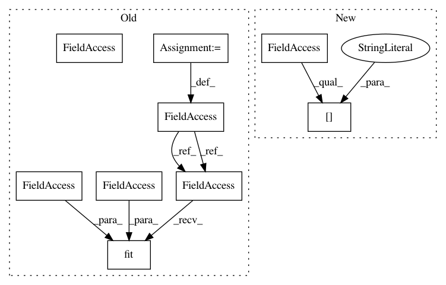

547a03ef87e4aa92edc1e89ee2db04114e1a8ad5,examples/plot_otda_jcpot.py,,,#,104
Before Change
// Run oracle transport algorithm with known proportions
// ----------------------------------------------------------------------------
otda = ot.da.JCPOTTransport(reg_e=0.01, max_iter=1000, tol=1e-9, verbose=True, log=True)
otda.fit(all_Xr, all_Yr, xt)
h_res = np.array([1 - pt, pt])
ws1 = h_res.dot(otda.log_["all_domains"][0]["D2"])
After Change
plot_ax(dec1, "Source 1")
plot_ax(dec2, "Source 2")
plot_ax(dect, "Target")
print_G(ot.bregman.sinkhorn(ws1, [], otda.log_["all_domains"][0]["M"], reg=1e-2), xs1, ys1, xt)
print_G(ot.bregman.sinkhorn(ws2, [], otda.log_["all_domains"][1]["M"], reg=1e-2), xs2, ys2, xt)
pl.scatter(xs1[:, 0], xs1[:, 1], c=ys1, s=35, marker="x", cmap="Set1", vmax=9)
pl.scatter(xs2[:, 0], xs2[:, 1], c=ys2, s=35, marker="+", cmap="Set1", vmax=9)
In pattern: SUPERPATTERN
Frequency: 3
Non-data size: 9
Instances
Project Name: rflamary/POT
Commit Name: 547a03ef87e4aa92edc1e89ee2db04114e1a8ad5
Time: 2020-04-01
Author: ievgen.redko@univ-st-etienne.fr
File Name: examples/plot_otda_jcpot.py
Class Name:
Method Name:
Project Name: keras-team/autokeras
Commit Name: b115f1f721594772ca12e02dc388b1b210a2ee73
Time: 2018-05-02
Author: jin@tamu.edu
File Name: experiments/mnist.py
Class Name:
Method Name:
Project Name: rflamary/POT
Commit Name: 547a03ef87e4aa92edc1e89ee2db04114e1a8ad5
Time: 2020-04-01
Author: ievgen.redko@univ-st-etienne.fr
File Name: examples/plot_otda_jcpot.py
Class Name:
Method Name: